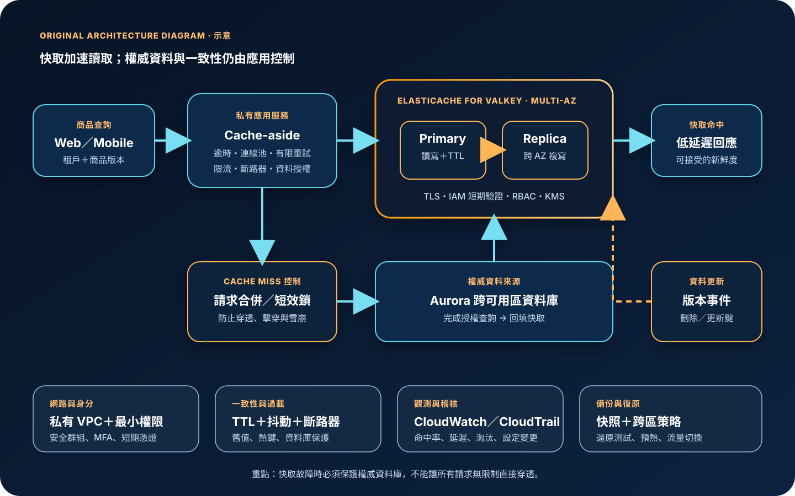

Amazon ElastiCache：快取、低延遲與資料一致性治理
Amazon ElastiCache 是受管的分散式記憶體資料儲存與快取服務，支援 Valkey、Redis OSS 與 Memcached。它能降低熱門資料的讀取延遲與後端資料庫負載，但不會自動決定哪些資料可被快取、何時失效、如何避免舊資料、如何處理快取故障，亦不應被當成所有業務資料的唯一真實來源。
作者：Dr. William｜查閱與發布：2026-09-26
服務定位
Amazon ElastiCache 位於應用程式與較慢或較昂貴的資料來源之間，利用記憶體中的鍵值資料縮短回應時間。常見用途包括資料庫查詢結果、商品目錄、工作階段、排行榜、速率限制計數器與短期運算結果。應用仍須理解快取命中、未命中、失效、淘汰與後端降級路徑。
ElastiCache 提供 Serverless cache 與節點式叢集。Serverless 會管理容量與底層節點，提供單一端點並依使用量計費；節點式叢集則讓團隊選擇節點類型、分片、複本、可用區、參數與擴縮方式。引擎選擇需依資料結構、持久性、複寫、交易、Pub/Sub、授權及簡單鍵值需求決定，不能只按熟悉度套用。
核心概念與適用邊界
主要元件
- Valkey／Redis OSS：支援多種資料結構、TTL、複寫、分片、交易、Lua 與 Pub/Sub；可使用 RBAC、AUTH 或符合條件的 IAM 驗證。
- Memcached：著重簡單、分散式、記憶體鍵值快取，適合不需要複寫、持久化及複雜資料結構的工作負載。
- Serverless：自動監控記憶體、運算與網路需求並擴縮；用戶端必須支援 TLS 與叢集模式。
- 節點式叢集：可控制節點、分片、複本、參數、維護與擴縮；容量不足、熱點或錯誤選型仍由客戶處理。
- 端點：應用應使用服務 DNS 名稱，而非固定底層 IP；叢集模式、讀取端點與主節點端點的行為不同。
- TTL 與淘汰：TTL 決定資料有效期間；記憶體壓力下的 eviction policy 決定哪些鍵可被移除。
資料與責任邊界
- 快取資料原則上必須視為可能過期、可能遺失、可能被淘汰；關鍵交易資料仍應保存於具明確耐久性與一致性設計的系統。
- 讀取複本可分攤流量，但通常存在複寫延遲；不能把最終一致讀取誤當成同步強一致。
- Multi-AZ 與自動容錯能處理區域內節點或可用區故障，但應用仍須處理短暫中斷、重連、逾時與重試。
- Global Datastore 可跨區複寫 Valkey／Redis OSS 資料，但跨區升級與流量切換並非完整應用自動容錯。
- 快取鍵、值、日誌與備份可能包含個資或敏感業務資料；資料最小化與保存期限仍由客戶定義。
- 資料庫成功更新不代表快取已同步失效；一致性策略必須由應用與事件流程明確實作。
適合與不適合的使用情境
適合
- 熱門資料被大量重複讀取，來源查詢相對慢或昂貴，且可接受明確期限內的資料陳舊。
- 需要低延遲工作階段、排行榜、計數器、分散式協調或短期狀態，並已定義遺失與重建方式。
- 資料庫面臨讀取尖峰，希望以 cache-aside、read-through 或其他模式吸收重複請求。
- 需要 Valkey／Redis OSS 的資料結構與生態，或需要簡單可水平擴展的 Memcached 快取。
- 負載變化大且希望減少容量規劃時採 Serverless；負載可預測或需精細控制時採節點式叢集。
不適合或不能單獨完成
- 資料每次都必須即時、強一致、不可遺失，且沒有可重建的權威資料來源。
- 查詢幾乎不重複、資料很少被再次使用，快取命中率不足以抵銷成本與複雜度。
- 希望只增加快取，不修改應用的逾時、重試、失效、降級、容量與觀測邏輯。
- 需要任意 SQL 查詢、長期歷史保存、完整資料倉儲或大型物件儲存。
- 把快取端點公開轉送至網際網路，或無法在 VPC、TLS、身分與安全群組邊界內連線。
示意故事案例：商品目錄的受控 cache-aside
以下為示意案例，不代表特定企業或正式部署。 一個電商商品目錄以 Aurora 作為權威資料來源，私有應用服務在收到查詢後先以商品版本與租戶識別組成快取鍵，連線到跨可用區的 ElastiCache for Valkey。命中時回傳資料；未命中時，只有取得短效鎖的請求查詢 Aurora，其餘請求短暫等待或使用可接受的舊值，避免大量請求同時壓向資料庫。
寫入流程先完成資料庫交易，再發布版本事件刪除或更新對應快取鍵。每個鍵都有依資料新鮮度設定的 TTL 與隨機抖動，降低大量鍵同時到期造成的快取雪崩。應用只允許透過專用安全群組與 TLS 連線，使用 IAM 短期驗證與 Valkey RBAC 限制命令；KMS 保護靜態資料與備份，CloudWatch 監控命中率、延遲、記憶體、淘汰與複寫，CloudTrail 稽核管理 API。若快取不可用，應用以限流、斷路器與受控資料庫讀取維持核心查詢，而不是無限制繞過快取。

建置與運作流程
- 確認可快取資料：盤點資料取得成本、重複讀取率、新鮮度、敏感度、重建來源與快取失效後的業務影響。
- 定義成功指標：設定目標命中率、p95／p99 延遲、資料庫減載幅度、可接受陳舊時間、復原時間與成本上限。
- 選擇引擎：需要豐富資料結構、複寫、持久性或細部授權時評估 Valkey／Redis OSS；只需簡單暫存時評估 Memcached。
- 選擇部署模式：突發或難預測流量可評估 Serverless；需固定容量、資料分層、參數控制或既有節點治理時使用節點式叢集。
- 設計網路：將快取放在受控 VPC 子網路，安全群組只允許指定應用安全群組與連接埠；禁止建立網際網路公開轉送。
- 啟用資料保護：全程使用 TLS；依引擎與模式啟用靜態加密及客戶管理 KMS key，審查備份、同步、交換與資料分層的加密邊界。
- 建立身分控制：管理平面使用聯合登入、MFA 與短期憑證；資料平面採 IAM 驗證或受控 AUTH，並以 RBAC 限制使用者、鍵模式與命令。
- 實作快取模式：為 cache-aside、write-through、write-behind 或工作階段模式定義命中、未命中、更新、刪除、重試及失敗順序。
- 設定 TTL 與淘汰：依資料新鮮度設定 TTL，加入抖動避免同時到期；確認 maxmemory policy 與關鍵鍵是否可被淘汰。
- 防止集中失效：使用請求合併、短效鎖、預熱、背景刷新、限流與斷路器，避免 cache stampede、hot key 與後端雪崩。
- 配置可用性：Valkey／Redis OSS 節點式正式環境通常配置跨可用區複本、Multi-AZ 與自動容錯；應用需支援 DNS 更新與重連。
- 保護設定與機密：應用設定放入 Parameter Store；仍需管理的秘密放入 Secrets Manager，不寫入程式碼、映像、環境範本或一般日誌。
- 建立觀測：以 CloudWatch 追蹤命中率、延遲、記憶體、CPU、連線、淘汰、流量與複寫延遲；將適用的 slow log 與 engine log 送至集中保存位置。
- 備份與演練：依引擎支援啟用自動或手動備份，測試新快取還原、應用重新連線、快取清空、可用區失效與跨區切換。
成本、可用性與維運考量
Serverless 主要依資料儲存量與 ElastiCache Processing Units 計費；每次請求的資料量與運算複雜度會影響 ECPU。節點式叢集主要依節點類型與使用時間計費，可評估預留節點。備份儲存、跨可用區或跨區資料傳輸、Global Datastore、CloudWatch Logs、KMS 與其他整合服務可能另行計費。低命中率、過大的值、過長 TTL、熱鍵、無界限連線與重複跨區讀取都會同時惡化成本與效能。
高可用不等同零中斷。Serverless 會跨多個可用區複寫；節點式 Valkey／Redis OSS 可使用複本、Multi-AZ 與自動容錯。容錯期間仍可能出現連線中斷、DNS 變更、短暫寫入失敗與資料複寫落差，應用必須設定有限退避、逾時、連線池重建與冪等重試。讀取複本屬最終一致路徑，高風險讀取應回到權威資料來源或採版本驗證。
跨區復原必須涵蓋快取以外的應用、資料庫、KMS、網路、DNS、機密與觀測。Global Datastore 可將資料複寫至其他區域，但不會替整個應用完成自動跨區容錯；提升次要區域、更新流量與防止雙寫衝突都要有明確程序。若快取內容可由權威資料重建，跨區策略可選擇冷啟動或預熱，而不是不分情境複寫所有資料。
Amazon ElastiCache 特有資安風險與控制
- 快取端點暴露：使用私有子網路與專用安全群組，只允許應用安全群組；不得以 NAT port forwarding、公開代理或 0.0.0.0/0 建立對外資料平面。
- 未加密連線：啟用傳輸中加密並驗證伺服器憑證；Serverless 用戶端必須支援 TLS，避免降級為明文連線。
- 共用高權限帳號：Valkey／Redis OSS 使用 IAM 短期驗證或受控 AUTH，搭配 RBAC 限制鍵模式與命令；區分應用、維運與唯讀角色。
- 危險命令與橫向存取：禁止不必要的管理、掃描、清空與指令碼能力；多租戶鍵需有不可混淆的命名、授權與資料層驗證。
- 敏感資料長留：快取前做資料最小化與分類，避免存放不必要的完整個資、驗證資料與秘密；設定短 TTL，日誌不得記錄鍵值內容。
- 快取投毒：回填前驗證來源、租戶、資料格式與版本；避免由使用者輸入直接決定未隔離的鍵，重要資料可加入完整性或版本檢查。
- 舊資料授權繞過：權限、封鎖狀態、價格與庫存等高風險資料需縮短 TTL、事件失效或直接查詢權威來源；不得只相信舊快取結果。
- 快取穿透與雪崩：對不存在資料使用短期負快取，搭配請求合併、TTL 抖動、限流、斷路器及受控後端容量，防止攻擊或集中到期壓垮資料庫。
- 熱鍵與阻塞命令：監控單鍵流量、引擎 CPU、延遲與 slow log；拆分熱鍵、限制大型值與高複雜度命令，避免單一命令拖慢整個分片。
- 備份與 KMS 風險：使用 KMS 保護支援的靜態資料與備份，限制 key policy、建立金鑰停用與刪除告警，並實測還原權限。
- 設定變更未稽核：以 CloudTrail 集中保存建立、修改、刪除、快照與使用者群組變更；對公開路徑、加密關閉、權限擴大及備份失敗告警。
- 故障時無限制繞過：快取失效時限制資料庫併發，採分級降級、暫存舊值或拒絕非核心流量，避免可用性事件擴大為資料庫事故。
共同責任邊界
AWS 負責 ElastiCache 受管服務及底層雲端基礎設施的安全、硬體供應、節點替換與服務維護，並依部署模式提供擴縮、複寫、備份與加密能力。客戶負責引擎與部署模式選型、VPC 與安全群組、資料分類、快取鍵和值、TTL、失效、一致性、身分授權、KMS、觀測、容量、成本與復原。
客戶仍須落實 IAM 最小權限、管理人員 MFA 與短期憑證、網路隔離與公開存取盤點、KMS 加密、Secrets Manager／Parameter Store、CloudTrail／CloudWatch、備份及跨區復原。AWS 不會替應用判斷某筆資料是否可陳舊、某個鍵是否屬於正確租戶、資料庫更新後應刪除哪些鍵，亦不會自動保護後端免受快取穿透或故障繞過的流量衝擊。
上線前可執行檢查清單
- □ 已記錄每類資料的權威來源、可接受陳舊時間、重建方式、敏感度與快取失效影響。
- □ 引擎與 Serverless／節點式模式已依資料結構、流量、參數控制、可用性及成本測試選定。
- □ 快取位於受控 VPC 子網路，專用安全群組只允許指定應用來源與必要連接埠。
- □ 沒有公開代理、NAT port forwarding、0.0.0.0/0 或不受控跨網路路徑暴露快取資料平面。
- □ 用戶端使用服務 DNS、TLS、憑證驗證、連線池、合理逾時、有限退避與重連機制。
- □ 管理者使用聯合登入、MFA 與短期憑證；建立、修改、快照、刪除及 iam:PassRole 權限已縮限。
- □ Valkey／Redis OSS 採 IAM 短期驗證或受控 AUTH，RBAC 已限制應用可用命令與鍵範圍。
- □ 任何 credential、Access Key、Secret Key、Token、密碼或 cookie 都未寫入原始碼、映像、快取鍵值、URL 或一般日誌。
- □ 機密存於 Secrets Manager，非秘密設定存於 Parameter Store，兩者均有最小權限、輪替與稽核。
- □ 傳輸與靜態資料加密已啟用；KMS key policy、停用、刪除、備份與還原權限已測試。
- □ cache-aside 或其他模式已明確定義讀取、未命中、回填、更新、刪除、失敗及競爭條件。
- □ TTL、隨機抖動、負快取與 eviction policy 已依資料風險及容量壓測結果設定。
- □ 已實作請求合併、短效鎖、限流、斷路器或背景刷新，避免穿透、擊穿與集中到期。
- □ 多租戶鍵具不可混淆的命名與資料授權；敏感資料已最小化，日誌不包含實際鍵值內容。
- □ 正式節點式 Valkey／Redis OSS 已依需求跨可用區配置複本、Multi-AZ 與自動容錯。
- □ CloudWatch 已監控命中率、延遲、記憶體、CPU、連線、淘汰、網路、複寫延遲與成本。
- □ slow log／engine log 已依適用性集中保存，並避免在命令參數與日誌洩漏敏感資料。
- □ CloudTrail 已集中保存 ElastiCache 管理 API，重要設定、使用者、快照與刪除事件已告警。
- □ 已估算 Serverless 的儲存量與 ECPU，或節點式的節點時數、預留承諾、備份及資料傳輸成本。
- □ 已演練快取清空、節點失效、可用區失效、連線風暴、熱鍵、資料庫保護、備份還原與跨區切換。
AWS 官方一手來源
- What is Amazon ElastiCache?（查閱：2026-09-26）
- How ElastiCache works（查閱：2026-09-26）
- Common ElastiCache use cases（查閱：2026-09-26）
- Overall best practices（查閱：2026-09-26）
- Understanding ElastiCache and Amazon VPCs（查閱：2026-09-26）
- Data security in Amazon ElastiCache（查閱：2026-09-26）
- At-rest encryption in ElastiCache（查閱：2026-09-26）
- Authenticating with IAM（查閱：2026-09-26）
- Resilience in Amazon ElastiCache（查閱：2026-09-26）
- Global Datastore prerequisites and limitations（查閱：2026-09-26）
- Scheduling automatic backups（查閱：2026-09-26）
- ElastiCache metrics to monitor（查閱：2026-09-26）
- ElastiCache Well-Architected performance efficiency（查閱：2026-09-26）
- Amazon ElastiCache pricing（查閱：2026-09-26）
- AWS Well-Architected Security Pillar｜Shared responsibility（查閱：2026-09-26）
內容說明
本文依查閱日可用的 AWS 官方文件整理，作為基礎學習與架構討論材料；實際部署仍須依最新功能、引擎版本、區域支援、價格、配額、資料分類、組織政策及復原演練結果調整。